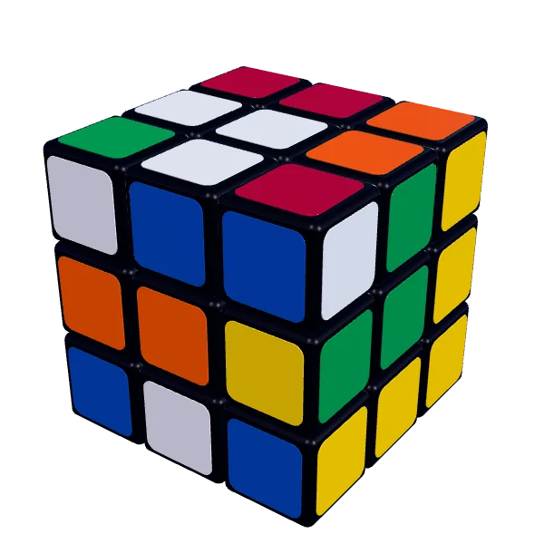

Go on. Twist it.
Kubelo is a 3D cube on your phone. Scan your own 3×3 and solve it on the screen, one move at a time. Time your solves and duel a friend. Free, with no account and no ads.
Scroll down or tap play
This is your cube
Hold up your mixed-up 3×3, and the camera reads the colors. Then play that same cube on the screen, and Help shows the next move until it's solved.
No photos are stored or shared.
From 2×2 to 7×7
Drag to turn the cube. Tap Scramble to mix it, and the clock starts with your first turn.
See your progress
Your best time is at the top of Records, with a graph of your solves. World shows the top 100 this week and of all time.
Choose your view
Above the clouds, above the sea, or above the Earth.